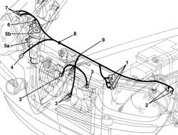

5505A10 front beam wiring - r r
- Path
- Procedures > 55 ELECTRICAL EQUIPMENT > 5505 ELECTRICAL CIRCUIT FOR INSTRUMENTS/INDICATORS > 5505C vehicle compartment wiring > 5505A10 front beam wiring - r r
- Kind
- repair procedure (removal / refitting; the operation number is the code)
- Applies to
- all engines; all production periods
- Interactive page
- https://sloeber94.github.io/elrnDB-a156/en/#/3238391
Applies to: all engines; all production periods
Applies to: all engines; all production periods
 Removing
Removing
 Refitting
RefittingPlace car on the lifting bridge.
1. Open engine compartment cover and disconnect electric connections with front harness.
2. Disconnect left lamp electric connections.
3. Disconnect electric connections from radiator - solenoid valve group.
4. Disconnect mass terminal.
5. Lift the car, unloose fixing clamp (5a) of dehydrator filter (5b).
6. Disconnect multilevel pressure switch electric connection.
7. Lower the car and disconnect the two right lamp electric connections.
8. Open stop clamps.
9. Remove front cross brace cable group.

Applies to: all engines; all production periods
Refitting
RemovingCheck harness is not damaged and each conductor is properly anchored to connections.
Check connections have secondary locks.
If necessary, carry out proper continuity tests.
Position front cross brace harness.
Block it with stop clamps.
Connect right lamp electric connections.
Lift the car and connect multilevel pressure switch electric connection.
Place dehydrator filter in its seat and fix it with fixing clamp, then lower the car.
Connect mass terminal.
Connect heater fan - radiator group electric connections.
Connect the two left lamp electric connections.
Connect electric connections with front harness.
Take the car off the lifting bridge.